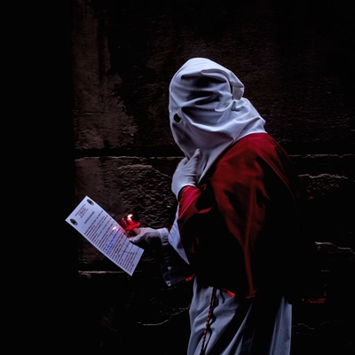
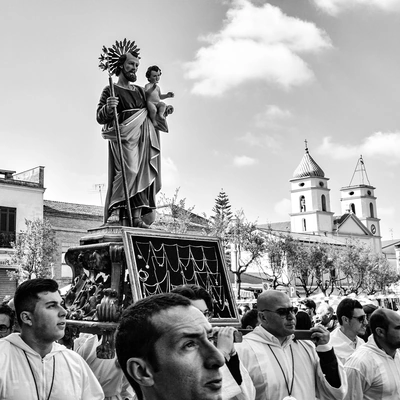

Processions
Processioni, cortei e celebrazioni di comunità
Un percorso visivo tra riti che occupano la strada: comitive in movimento, attese affollate e attimi solenni. Le immagini restituiscono il carattere pubblico della devozione e delle feste radicate, dove il corpo sociale si riconosce nel gesto ripetuto e condiviso.

